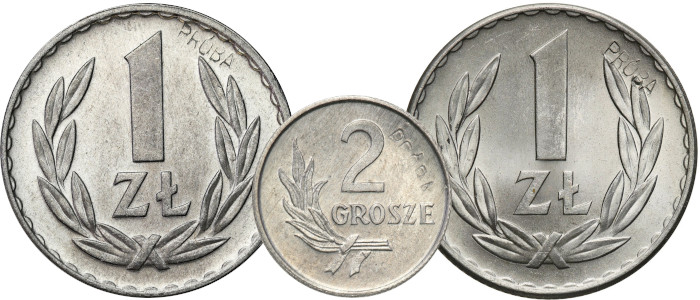
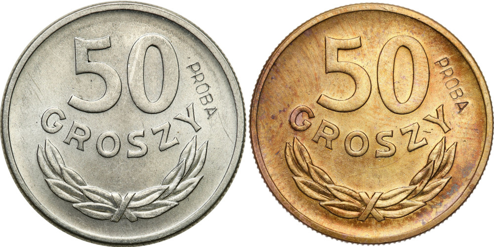

'Nowe' fałszywe próby PRL wybijane puncą

Minął już prawie rok od czasu przygotowania opracowania zawierającego listę fałszywych prób PRL z napisem wybijanym puncą, który opublikowałem w maju 2024 roku. Nie obiecywałem sobie wiele jeśli chodzi o reakcję środowiska, gdyż jest to temat niszowy. I tu się nie zawiodłem 🙂. O tym, co mnie nieco zdziwiło/zawiodło, napiszę w dalszej części posta.
Zgodnie z katalogiem p. Parchimowicza, liczba kompletów prób PRL w aluminium z napisem PRÓBA wybitym puncą nie przekraczała 100 sztuk. Uwzględniając fakt, iż aby dostać komplet monet w mosiądzu, należało zwrócić komplet prób w aluminium otrzymany uprzednio, zasadne wydaje się stwierdzenie, że na rynku jest ich znacząco mniej per nominał. Pojawiają się rzadko, nie różnią znacząco od monet obiegowych (które są znacząco tańsze) i nie za bardzo mogą nawet wizualnie konkurować z monetami mosiężnymi (patrz zdjęcie poniżej), które z racji swojego koloru od razu rzucają się w oko (a kosztują mniej więcej tyle samo). Jednym zdaniem — monety dla prawdziwych fanatyków monet próbnych PRL, których nawet nie wiadomo ilu jest 🙂.

Oprócz zatem kilkuset odwiedzin mojego posta na tym ukrytym przed światem blogu (za które serdecznie dziękuję), temat fałszerstw tych monet w powszechnej świadomości umarł śmiercią naturalną. Niemniej jednak — z racji mojego zainteresowania tą epoką i mozolną pracą nad zebraniem w całość wariantów stempli monet próbnych PRL — nadal przeglądam notowania aukcyjne, by z jednej strony wychwycić kolejne notowania znanych mi już wcześniej fałszywych egzemplarzy, z drugiej mieć oko na potencjalne nowe wynalazki.
Tym oto sposobem znalazłem trzy 'nowe' egzemplarze fałszywych monet próbnych PRL z napisem wybitym puncą: 2 grosze 1949r., oraz dwie różne sztuki monet o nominale 1 złoty 1949r. wybite w aluminium (sztuka A, sztuka B). Piszę 'nowe' w cudzysłowie, bo je po prostu przeoczyłem w trakcie zeszłorocznych poszukiwań.
Uzupełniłem zatem oryginalny post o nowo znalezione egzemplarze (jak widać wszystkie wypłynęły na świat w tym samym domu aukcyjnym, a jedna z jednozłotówek uszczupliła kieszeń nowego właściciela o dosyć konkretną sumkę). I na tym można by zamrozić temat na (co najmniej) kolejny rok.
Zanim to jednak zrobię — podzielę się jeszcze zdziwieniem/zawiedzeniem, o którym wspomniałem na początku. Otóż, mimo iż temat zgłosiłem DA Niemczyk już w zeszłym roku, i mają świadomość, że sprzedawane przez nich egzemplarze są co najmniej dyskusyjne:
„Dziękuję za wiadomość, Pan Michał zapoznał się z przesłanymi od Pana informacjami. Od zawsze te monety budzą kontrowersje wśród kolekcjonerów. Jeśli pojawią się jeszcze tego typu monety, chętnie się z Panem skontaktujemy."
…nie przeszkodziło im to wystawić w grudniu ubiegłego roku po raz kolejny fałszywej monety 20 groszy 1949 CuNi, którą wystawiali już wcześniej. Łaskawie, po przypomnieniu im jak moneta wyglądała przed czyszczeniem, w jej opisie zmieniono stan zachowania z 1 na 2 'z delikatną patyną'.
A to wszystko dla ~300 PLN zysku z prowizji… No cóż: Pecunia non olet 🙂